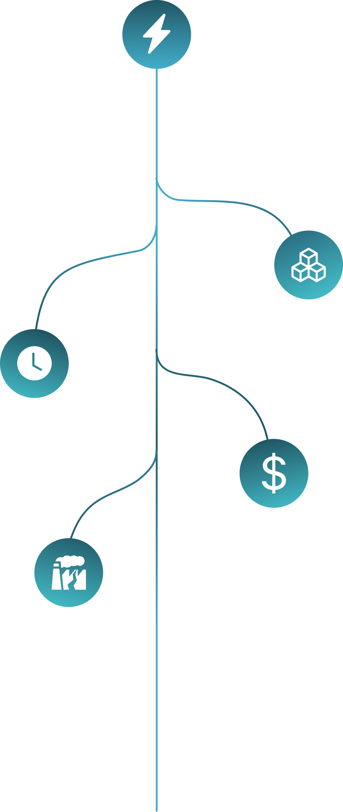

Adote um sistema de monitoramento para hardware do seu HPC
À medida que a quantidade de dados processados aumentam, é necessário garantir que o hardware opere o tempo esperado.

Referência na construção de sistemas de monitoramento de hardware. Cadastre-se para entrar em contato e configurar um sistema para o seu ambiente.
Cadastre-seInfraestrutura
Parceira
Conheça como funciona a infraestrutura da Petrobras
Abrir infraestrutura ↗
Conheça o Harpia
Conhecer ↗Cenpes
Conhecer ↗Infraestruturas complexas
exigem uma visão mais simples.
O NAUTILUS nasceu para tornar o monitoramento de ambientes de alta performance mais claro e acessível.
Centralizamos informações essenciais da infraestrutura para que equipes tenham maior visibilidade sobre seus
recursos e possam tomar decisões com mais agilidade.
Da acompanhamento dos recursos à identificação de utilização e riscos, nossa solução conecta monitoramento eficiente à gestão em uma única plataforma.
Visibilidade completa
Acompanhe seus ambientes, servidores e recursos em um único lugar.
Alertas inteligentes
Identifique anomalias e receba alertas antes que os problemas aconteçam.
Gestão eficiente
Decisões estratégicas baseadas em dados claros de funcionamento.
O que você não monitora
também gera custos.
VALOR DO SERVIÇO
O valor de um supercomputador se concentra no
processamento dos dados massivos, o monitoramento
de RAM e CPU são cruciais para que se possa determinar
o rendimento do supercomputador.

ENERGIA
Sem controle da eficiência energética (PUE), a refrigeração trabalha no escuro, gastando muito mais do que o necessário.
DADOS
Sem ter controle sobre o fluxo de dados, se paga por armazenamento inutilizado e taxas de egress que podem ser evitadas.
OCIOSIDADE
Os gastos são mais ou menos assim, nesse pique.
INVESTIMENTO
Os gastos são mais ou menos assim, nesse pique.
MULTAS
Os gastos são mais ou menos assim, nesse pique.
Mais controle para extrair mais da
sua infraestrutura.
Transforme o monitoramento em uma ferramenta para reduzir incertezas, antecipar problemas e aproveitar melhor os recursos disponíveis.
MAIS VISIBILIDADE
Centralize informações importantes da infraestrutura e acompanhe seus ambientes com mais clareza.
MENOS DESPERDÍCIO
Identifique recursos ociosos, sobrecargas e comportamentos que podem gerar custos desnecessários.
RESPOSTAS MAIS RÁPIDAS
Encontre situações críticas com agilidade e dê às equipes informações para agir no momento certo.
DECISÕES MAIS PRECISAS
Use dados do ambiente para entender sua operação e direcionar melhor seus recursos.
Sua infraestrutura já é
poderosa. Dê a ela a
visibilidade que merece.
Descubra como a NAUTILUS pode transformar a forma como sua equipe acompanha ambientes de alta performance e impulsionar resultados com mais controle e eficiência.